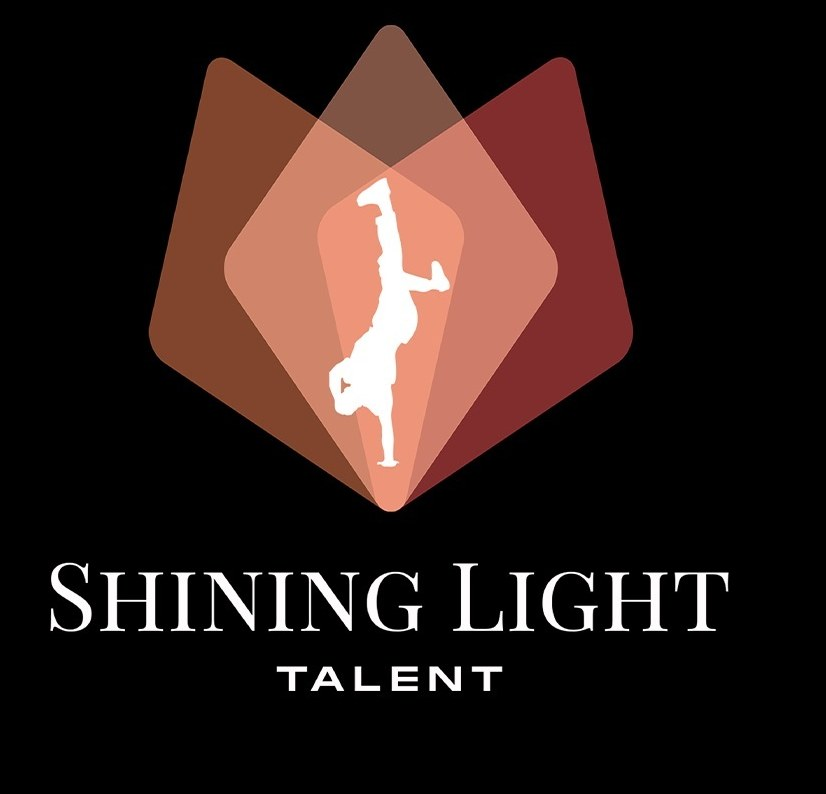

Expression, discipline and awakening talent
Shining Light Talent is built on transmission, discovery and the celebration of artistic potential in young people. Through dance, stage and body expression, it creates a space where everyone can reveal themselves, grow and stand tall.
Convinced that talent is a treasure to cultivate, Shining Light supports young people in their personal and artistic development, offering structured, inclusive and inspiring learning environments. Far more than a program, it is a springboard to self-confidence, creativity and excellence.
Through workshops, training and performances, the Talent branch acts as a lever for social impact, helping fight youth vulnerability while opening doors into the worlds of fashion and the arts.
Driven by values of discipline, respect and self-improvement, Shining Light Talent is shaping a new generation of free, engaged and bold spirits.
— Claire Simada Aeschimann
- Dance and body-expression workshops
- Stage and performance preparation
- Participation in Shining Light Fashion Shows
- Structured, inclusive and caring coaching
Events & milestones
Workshops & performances
 Dance Workshop
Dance Workshop Choreography
Choreography Group workshop
Group workshopReveal your talent.
Enroll a young person — or yourself — in our next dance and body-expression workshops.
Sign up for a workshop